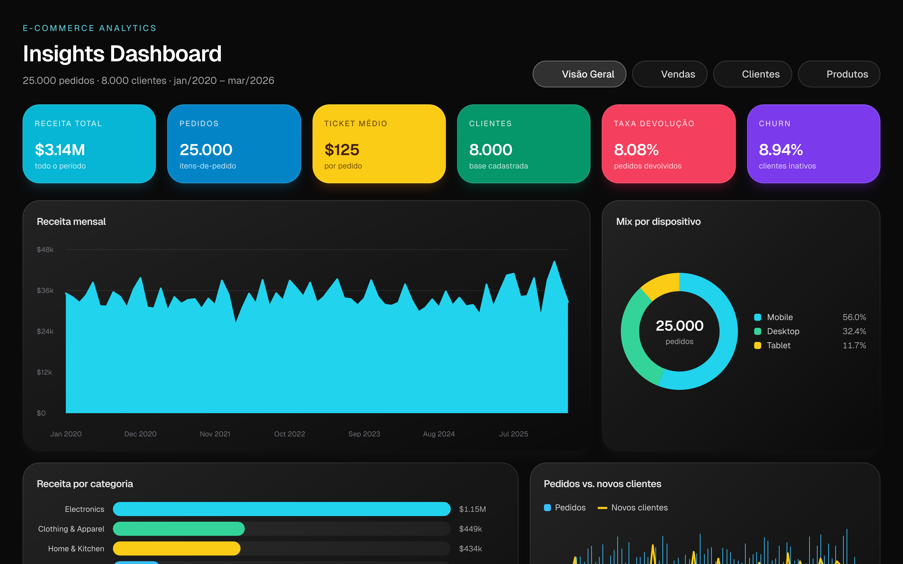
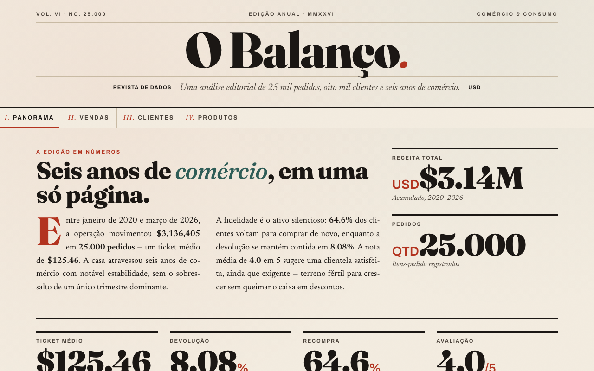
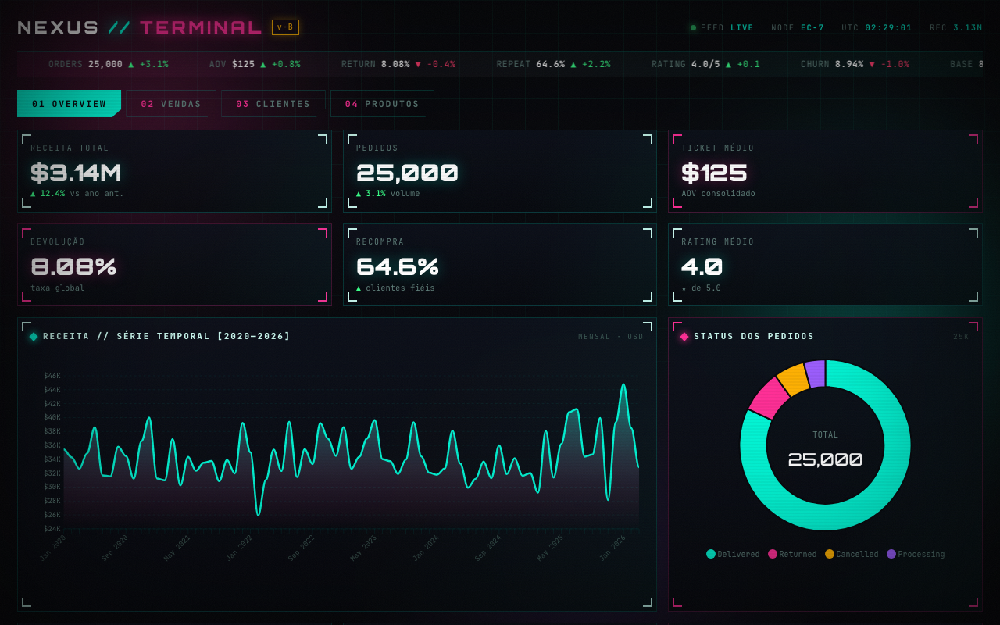

01

Aurora
Design System · Glassmorphism
A referência. Tema escuro com cartões de vidro fosco, KPIs em cores saturadas e gráficos desenhados à mão — 100% fiel ao design-system, sem bibliotecas.
Abrir dashboard →02

O Balanço
Editorial · Revista de dados
Uma publicação impressa de dados: serifa de display Fraunces, papel jornal, vermelho editorial, capitular e colunas justificadas. Gráficos ECharts re-tematizados.
Abrir dashboard →03

NEXUS // Terminal
Retro-futurista · Synthwave
Um terminal de trading neon: Orbitron + JetBrains Mono, ciano e magenta sobre quase-preto, sequência de boot, ticker ao vivo e painéis HUD. Gráficos ApexCharts.
Abrir dashboard →